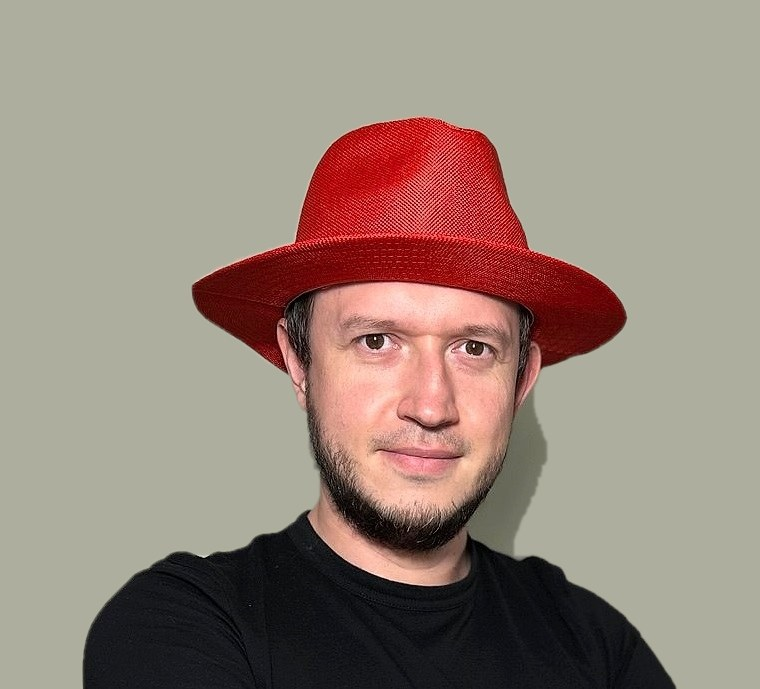

🐧
Linux-платформа
Управление парком серверов, жизненный цикл ОС, репозитории и патч-менеджмент.
Системный администратор решений на Linux. Собираю платформу из RedHat Satellite, Ansible AWX, Kubernetes и Puppet, а рутину закрываю конвейерами на GitLab CI/CD, Terraform и Packer.
Первое видео — 30 августа 2026

Если вы сейчас в начале пути — эта история про то, что начинали все примерно одинаково.
Никакого плана у меня не было. В школе я работал инженером по обслуживанию и с нуля собрал серверную с контроллером домена, а потом и телефонию на аналоговой мини-АТС — тогда это казалось настоящей взрослой инфраструктурой. Дальше было промышленное предприятие: первое знакомство с виртуализацией, серверы на SUSE Linux и сеть, в которой уживалось всё подряд. Я просто разбирался с тем, что ломалось, — и уже там понял главное про себя: интереснее не чинить руками, а строить так, чтобы чинить не приходилось.
Дальше был мониторинг, автоматизация оповещений об инцидентах, поддержка большой инфраструктуры на Red Hat — и с каждым шагом всё меньше ручной работы. Ничего из этого мне не объяснили заранее: я собирал понимание по кускам, из документации и сломанных стендов. Если вам сейчас кажется, что вокруг все уже всё знают, — они тоже когда-то не знали. Канал и курсы я готовлю ровно за этим: показать, как устроены вещи, которые со стороны выглядят магией, чтобы вам не пришлось собирать их по кускам, как собирал я.
Не проценты владения, а то, за какие слои я отвечаю на практике.
Управление парком серверов, жизненный цикл ОС, репозитории и патч-менеджмент.
Конфигурации, плейбуки и оркестрация задач для команд эксплуатации.
Окружения описаны, версионируются и поднимаются воспроизводимо. Секреты — отдельно от кода.
Конвейеры сборки и проверки: от коммита до продвижения артефакта в прод.
Запуск нагрузок в кластере, балансировка трафика и централизованный сбор логов.
Скрипты и утилиты там, где готового решения нет. Процессы и системы — описаны схемами.
Кейсы вместо списка должностей. Нажмите на карточку — откроются задача, решение и стек.
Подтверждения квалификации — от базового образования до курсов повышения. Нажмите на карточку, чтобы открыть скан целиком.
Разбираю инфраструктурные задачи на практике: не «посмотрите, как я умею», а так, чтобы вы повторили это у себя.
Всё, что обычно нужно на первом шаге, — на одном экране.
Открыт к разговору про инфраструктуру, автоматизацию и наведение порядка в платформе. Напишите — расскажу подробнее про любой кейс.